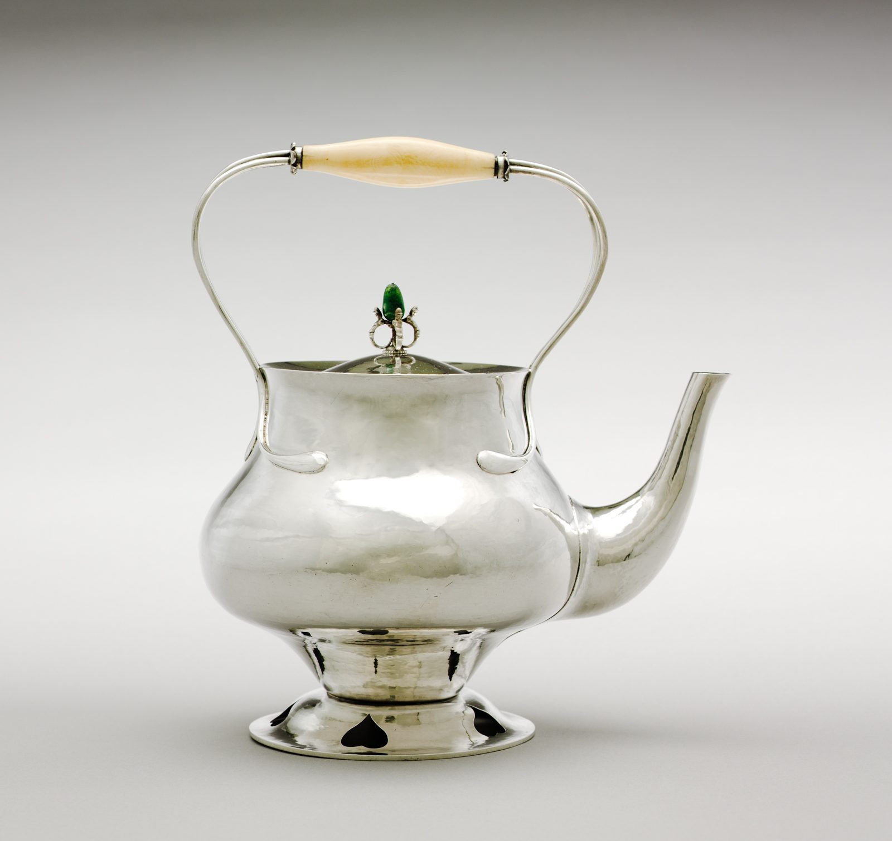

References / Product / 332
Silver kettle by C. R. Ashbee
A plain, hand-hammered silver kettle by the founder of the Guild of Handicraft, with an ivory handle, a green stone finial, and heart-shaped piercings in the foot.
- Source
- Cleveland Museum of Art: Kettle, 1976.23
- Creator
- Charles Robert Ashbee
- Made
- 1900
- Style
- Arts and Crafts (agent-proposed, not yet reviewed by a person)
- Moods
- Handmade, plain, honest
- Evidence
- Downloaded and inspected the Cleveland Museum of Art open-access image of object 1976.23 (3400 × 3208 px). The museum record has no description; the maker attribution, date, and materials come from its tombstone data.
- Reviewed
- Rights
- Open license, stored. License: CC0-1.0. Rights policy
Context
Cleveland lists the kettle as silver with an ivory handle and chrysoprase finial, 28.6 × 25.7 cm, by Charles Robert Ashbee (1863–1942), England, 1900. Cleveland Museum of Art.
Ashbee founded the Guild and School of Handicraft in the East End of London and moved the guild to Chipping Campden in 1902. Wikipedia describes the guild’s work as plain surfaces of hammered silver, flowing wirework, and coloured stones in simple settings. Wikipedia: Arts and Crafts movement.
Observed
- The body is a squat, rounded pot on a flared foot. Small dents from hammering break up the reflections on every surface.
- A tall loop handle of two thin silver rods ends in teardrop-shaped tabs soldered to the shoulder. The grip is a spindle of pale ivory.
- The lid finial is a green stone held in a small silver wire cage.
- Heart shapes are pierced through the foot ring.
- There is no engraved or chased ornament on the body.
Why it belongs
The kettle shows the movement’s surface trait, visible handwork, without its pattern. It is closer to the plain, square branch than to Morris’s textiles.
The only ornament is structural: the pierced foot, the handle tabs, and the stone. That is the movement’s idea of ornament that stays secondary to the thing it decorates.
Borrow
Let a hand-made surface texture stand in for ornament: one quiet texture over a plain form.
Mark a small detail with a simple cut-out shape, such as a heart, instead of applied decoration.
Measured
Machine-extracted by tools/image-traits.py on . Full measurement.
- Mean chroma
- 0.03
- Palette
- #cbc9c6 29%
- #edecea 24%
- #dddcda 17%
- #b0aea6 10%
- #a6a39a 5%
- #bdbbb7 4%
- #9a978c 4%
- #8a877c 3%

